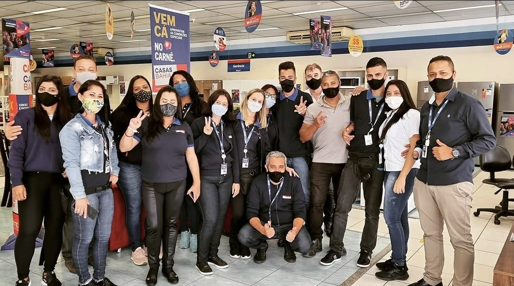
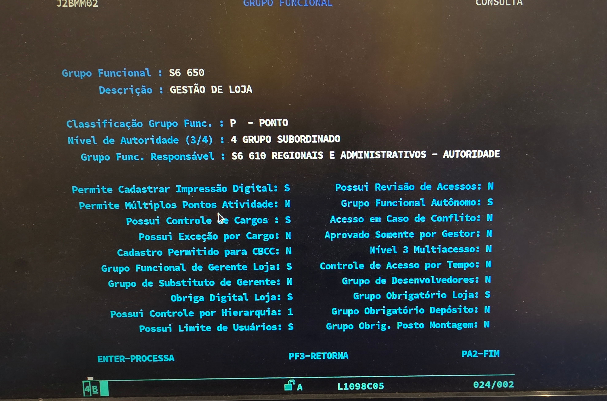
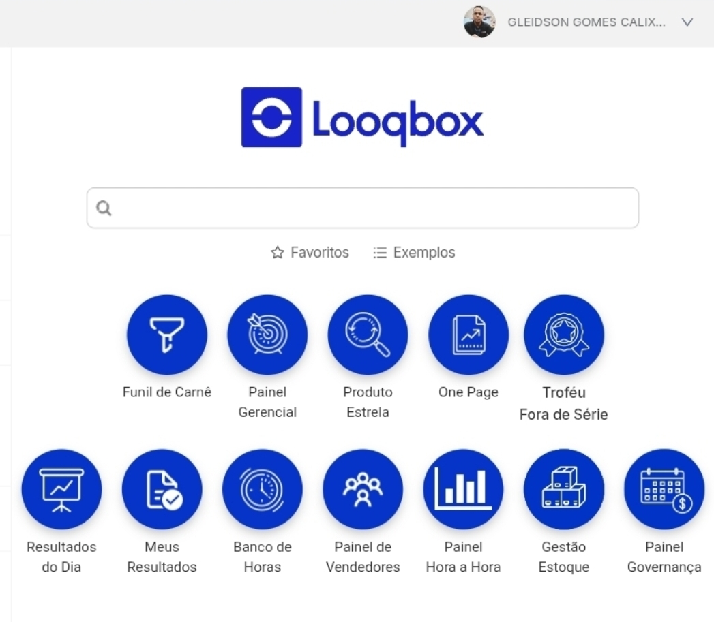

Este documento reúne, em ordem cronológica, os principais fatos ocorridos durante o meu vínculo empregatício junto ao Grupo Casas Bahia S.A. (antiga Via Varejo S.A.), com o objetivo de subsidiar a análise do meu advogado. Este registro foi elaborado a partir da minha memória, de documentos que possuo e de informações que poderei complementar, para que os fatos sejam confrontados com os registros da empresa e demais meios de prova. Ao longo deste relato, apresento minha trajetória, as responsabilidades que exerci e as pessoas que acompanharam minha jornada.
Este material possui natureza descritiva. Meu objetivo é registrar os acontecimentos, as funções desempenhadas e a cronologia dos fatos, facilitando o trabalho do advogado responsável pela análise jurídica do meu caso. Este documento não contém conclusões jurídicas, mas serve como um memorial completo dos acontecimentos vivenciados por mim, auxiliando na identificação de documentos e na organização das informações que serão fundamentais para uma eventual Reclamação Trabalhista.
O conjunto completo de provas que fundamenta os fatos aqui descritos encontra-se armazenado e estruturado em nuvem. Para consultar a documentação na íntegra, acesse:
A estrutura hierárquica da Filial 1098 e da superintendência regional reflete a cadeia de comando corporativa à qual estive vinculado. Abaixo, destacam-se os níveis de gestão e liderança:
1. Alta Administração Executiva
Chief Executive Officer (CEO): Renato Horta Franklin
Chief Operating Officer (COO): Frederic Paul Bernard Gauthier
2. Diretoria e Gestão Regional
Diretoria de Operações: Alex Marques | Cristian Moraes | Regis Wilson Bueno
Gerência Regional (GTE Regional): Tiago Favaro | Cleisson Luis Alves de Moraes | Manoel Novais Junior
📌 Nota sobre a Reestruturação Organizacional (2019):
No último trimestre de 2019, a empresa extinguiu formalmente os cargos de Liderança de Setor (Mobile, Linha Branca, Tecnologia e Móveis). Com o fim dessa estrutura, as atribuições operacionais, administrativas e de suporte à gestão — incluindo aprovações comerciais, liberação de crédito, saídas de caixa e condução da equipe — passaram a ser desempenhadas diretamente por mim no suporte à gerência.
Histórico Profissional e Evolução

2016 — Admissão e Desenvolvimento Administrativo
Admitido em agosto de 2016 como Operador de Caixa na Filial 1098 – Itaim Paulista.
Em outubro de 2016, a convite da Coordenadora de Atendimento Loja (CAL) Clayre Alcântara, passei a atuar como seu backup no backoffice, sendo desenvolvido em rotinas operacionais, controles internos e suporte à gestão até a promoção para o cargo de Vendedor Interno.
2017 — Promoção Comercial
Promovido em julho de 2017 ao cargo de Vendedor Interno pelo gerente Thiago Favaro, permanecendo lotado na Filial 1098 e passando a atuar diretamente na área comercial, com atendimento aos clientes, venda de produtos e serviços e demais atividades próprias da função.
2019 — Desenvolvimento para Liderança e Transição para Suporte Gerencial
Convidado pelo líder do setor Mobile na época, Fábio Willian, para atuar como seu backup e iniciar um processo de desenvolvimento voltado à liderança. O convite foi realizado verbalmente, com a informação de que eu aprenderia tarefas relacionadas à gestão e seria preparado para, futuramente, trilhar um caminho até cargos de liderança e posteriormente de gerência.
Passei a acompanhá-lo no cotidiano da operação, aprendendo procedimentos relacionados à gestão de equipe, metas, organização do setor e utilização de sistemas internos.
Naquele período, a Filial 1098 contava com aproximadamente quatro ou cinco líderes de setor, distribuídos entre Mobile, Tecnologia, Linha Branca, Linha Leve e Móveis.
Também nesse ano participei do programa Líderes do Futuro (processo seletivo para vaga de gerente de loja).
No último trimestre de 2019, a empresa promoveu alterações em sua estrutura organizacional com a extinção do cargo de Vendedor Líder. Com o fim dessa estrutura, passei a prestar suporte diretamente à gerência da Filial 1098, sob a gestão do gerente Luciano Borges, atuando no acompanhamento de indicadores, organização de loja e suporte à operação.
2020 — Atuação na Pandemia e Suporte à Operação Online
Com o início da pandemia da COVID-19 e a implantação de novas modalidades de atendimento e vendas online, participei desde os primeiros momentos da implementação dessas novas rotinas na Filial 1098 e também tive contato com a operação da Filial 1172 – Shopping Metrô Itaquera.
Por ter adquirido conhecimento sobre a nova ferramenta e seus procedimentos, passei a ser procurado por vendedores, gerentes, profissionais de outras filiais e integrantes da liderança regional para esclarecimento de dúvidas, resolução de problemas operacionais e orientação sobre procedimentos e estratégias relacionados às vendas online. Esse suporte acabou alcançando outras unidades da regional.
2020 — Início das Coberturas Gerenciais
A partir de aproximadamente julho de 2020, passei a realizar coberturas recorrentes da gerência da Filial 1098 durante ausências do gerente Luciano Borges. Essas substituições ocorreram em diferentes situações, incluindo férias, afastamentos, reuniões, treinamentos, compromissos corporativos, horários de almoço, abertura ou fechamento da loja e outras ausências durante o expediente.
Durante esses períodos, permanecia responsável pelo acompanhamento da operação da unidade e pelo atendimento das demandas relacionadas à equipe, clientes e funcionamento da loja até o retorno do gerente titular. Em setembro de 2020, realizei minha primeira cobertura externa de gerência, na Filial 1525 – Itaim Paulista II, durante as férias do gerente Sérgio Moreira.
2021 — Expansão das Coberturas gerenciais
Em 2021, passei a realizar substituições também em outras unidades. Durante afastamento médico do gerente Luciano Borges, o gerente Leandro, da Filial 0735 – Ponto Frio Guaianases, foi deslocado para substituí-lo, e fui direcionado para substituí-lo na Filial 0735.
Também fui procurado pelo supervisor regional Tiago Favaro para realizar a cobertura das férias do gerente Ivan Batista, na Filial 1509 – Shopping Boulevard Tatuapé. Após essa substituição, passei a prestar apoio na Filial 1431 – Vila Matilde, que se encontrava sem gerente, e posteriormente fui direcionado para a Filial 1271 – Vila Diva, para substituir a gerente Dani durante seu período de treinamento após promoção. E depois retornando à filial 1431 para substituir o gerente André que havia recém-chegado, mas estava saindo de férias.
Após essas substituições, retornei à Filial 1098, onde continuei prestando suporte direto ao gerente Luciano Borges e realizando substituições durante suas ausências. Em algumas oportunidades, novas coberturas externas não foram realizadas porque não havia outro profissional disponível na Filial 1098 para assumir as atividades que eu desempenhava.
Também nesse ano participei do programa Líderes do Futuro (processo seletivo para vaga de gerente de loja).
Entre 2021 e 2023 eu possuía e-mail corporativo designado apenas a gerentes de loja.
2022 — Continuidade das Coberturas
Mantive a rotina de suporte à gerência da Filial 1098. Em determinado período, permaneci aproximadamente sete dias responsável pela operação da unidade durante afastamento médico do gerente Luciano Borges. Continuei também realizando substituições durante ausências temporárias, reuniões, horários de almoço, fechamento da loja e demais situações em que o gerente titular não permanecia na unidade.
2023 — Coberturas Gerenciais e Ampliação das Responsabilidades
Em 2023, continuei realizando coberturas na Filial 1098, inclusive durante período relacionado à cirurgia do gerente Luciano Borges. Entre 01 e 16 de agosto, realizei a substituição do gerente Luciano durante suas férias na Filial 1098. Entre 17 e 31 de agosto, passei a atuar na Filial 1100 – Itaquera, após o desligamento da gerente Mary.
Posteriormente, o supervisor regional Cleisson alinhou comigo uma possível substituição da gerente Erondina Luna, na Filial 1224 – Poá, prevista para setembro. Entretanto, após alinhamento com o gerente Luciano Borges, foi constatada novamente a necessidade da minha permanência na Filial 1098, em razão da ausência de outro profissional capaz de assumir as atividades que eu desempenhava durante suas ausências. Dessa forma, retornei à filial de origem, permanecendo em suporte à gerência, conforme também indicado na meta escala de setembro de 2023.
2023 — Impacto sobre a Atividade Comercial e Remuneração Variável
Ao longo desse período, o volume de atividades administrativas, operacionais e de suporte à gerência reduzia o tempo disponível para atuação comercial. Como minha remuneração variável estava vinculada às vendas e comissões, a redução do tempo destinado à atividade comercial impactava diretamente a possibilidade de geração de comissão.
Nesse período, algumas funções existentes anteriormente na estrutura da empresa foram extintas ou tiveram suas atribuições redistribuídas. Na Filial 1098, passei a prestar suporte em atividades em sistemas, treinamento e desenvolvimento de vendedores, apoio a vendedores com baixo desempenho, administração de páginas e publicações em redes sociais, divulgação e impulsionamento de promoções. Também passei a prestar suporte em atividades relacionadas ao Assistente Técnico, especialmente demandas relacionadas às trocas da loja.
2024 — Cobertura Gerencial na Filial 1224 – Poá
Em março de 2024, realizei a cobertura das férias do gerente Luciano Borges, que naquele momento estava lotado na Filial 1224 – Poá, unidade pertencente a outra estrutura regional. Após o período de cobertura, fui procurado por integrantes da liderança regional e por outros gerentes para novas oportunidades de substituição.
Entretanto, não fui liberado para novas coberturas porque não havia outro profissional disponível na Filial 1098 para assumir as atividades que eu desempenhava durante as ausências da gerência.
2025 — Cobertura Gerencial na Filial 1286 – Itaquaquecetuba
Entre 18 e 28 de março de 2025, fui procurado pelo supervisor regional Manoel para realizar a cobertura das férias do gerente Silva, na Filial 1286 – Itaquaquecetuba.
Após essa cobertura, deixei de realizar novas substituições em outras unidades, permanecendo principalmente vinculado às coberturas e ao suporte da gerência da Filial 1098.
2026 — Situação Atual
Permaneço na Filial 1098 – Itaim Paulista, formalmente enquadrado como Vendedor Interno, enquanto continuo prestando suporte direto à gerência da unidade e assumindo a operação em situações de ausência da gerente Alessandra Martins, conforme as necessidades da loja.
Relação de Substituições em Outras Filiais
Ano
Filial / Unidade
Motivo da Substituição
2020
1525 – Itaim Paulista II
Férias do gerente Sérgio Moreira
2021
0735 – Ponto Frio Guaianases
Cobertura da gerência da Filial 0735 (em substituição ao gerente Leandro, alocado na cobertura do gerente Luciano Borges).
2021
1509 – Shopping Boulevard Tatuapé
Férias do gerente Ivan Batista
2021
1431 – Vila Matilde
Primeira passagem, a loja estava a um tempo sem gerente titular
Segunda passagem substituindo o gerente André que havia assumido a filial.
2021
1271 – Vila Diva
Treinamento da gerente Dani
2023
1100 – Itaquera
Desligamento da gerente Mary Rodrigues
2024
1224 – Poá
Férias do gerente Luciano Borges
2025
1286 – Itaquaquecetuba
Férias do gerente Silva
Gestores Regionais
Wagner: Até 2020 (Desligado). Tiago Favaro: 2020 – 2021 (Desligado). Cleisson Luis Alves de Moraes: 2021 – 2024 cleisson.moraes@viavarejo.com.br
Manoel Novais Junior: 2024 – Atual manoel.junior@viavarejo.com.br
Filial 0735 — Ponto Frio Guaianases:
Leandro (Desligado).
Filial 1509 — Shop. Boulevard Tatuapé:
Ivan Batista (Desligado).
Filial 1431 — Vila Matilde:
1ª Passagem: Sem gerente titular.
2ª Passagem: André (Desligado).
Filial 1100 — Itaquera:
Mary Rodrigues (Desligada).
Filial 1224 — Poá:
Luciano Ferreira Borges.
Filial 1286 — Itaquaquecetuba:
Silva (Desligado).
Observações e Contexto Operacional
Porte e Complexidade das Unidades (Filiais 1098 e 1286):
As filiais da empresa possuem uma classificação de porte que varia de 1 a 6, definida com base na rentabilidade, faturamento e fluxo de operação. A Filial 1098 enquadra-se no Porte 5 (assim como a Filial 1286, onde também realizei cobertura gerencial), exigindo um elevado nível de responsabilidade e gestão. Devido à grande relevância financeira e operacional dessas unidades, a substituição da gerência não era atribuída a qualquer colaborador. Mesmo mantendo o registro formal de vendedor interno, fui frequentemente designado para assumir a gestão dessas unidades por períodos curtos e longos.
Escala de Trabalho e Autonomia Operacional:
Diferente do time de vendas, a jornada de trabalho, folgas, domingos, feriados, escalas de fim de ano e horários de refeição não seguiam a rotina dos demais vendedores. A escala era estruturada de forma alinhada à da gerência, garantindo a continuidade e a presença da liderança na loja inclusive nos períodos de maior fluxo operacional.
Responsabilidade Integral sobre a Filial:
Na ausência temporária, parcial ou integral do gerente titular, a responsabilidade pelo funcionamento da unidade, tomada de decisões, gestão do time e resposta por eventuais ocorrências operacionais ficava sob meu encargo direto.
E-mail Corporativo e Canal Interno:
Em 2021, foi criado o e-mail corporativo (gleidson.souza@viavarejo.com.br) para comunicação direta com as chefias, tratativas entre filiais e participação em reuniões alinhadas via Microsoft Teams. O referido e-mail foi desativado sem prévia comunicação em 2023, impossibilitando o acesso direto à totalidade do histórico de mensagens e registros operacionais — razão pela qual o presente histórico baseia-se nos registros preservados, escalas e memória funcional, sendo passível de exibição documental complementar pela empresa.
Programas de Liderança ("Líderes do Futuro"):
Em 2019, cheguei à etapa final do processo seletivo Líderes do Futuro (Painel com a Diretoria Regional), recebendo retorno negativo somente em fevereiro de 2021, após o congelamento das vagas na pandemia (notificado em junho de 2020). Contudo, paradoxalmente, logo no mês seguinte (março a maio de 2021) passei a atuar diretamente na gestão e cobertura de filiais na prática.
No ano de 2021, participei novamente do programa Líderes do Futuro, chegando até a entrevista com a Gerência Regional, com nova negativa em julho de 2021 — no exato período em que executava a liderança real de lojas. Isso demonstra que, embora a empresa aproveitasse na prática a capacidade gerencial para a cobertura de unidades, sonegava o reconhecimento formal e financeiro correspondente.
Atribuições Funcionais

Detalhamento comparativo e documental entre as funções formais registradas de Vendedor Interno e as atribuições práticas, administrativas e de liderança operacional efetivamente exercidas no dia a dia da unidade.
⚖️ Comparativo Funcional: Cargo Registrado vs. Atividades Identificadas
A comparação abaixo possui finalidade exclusivamente descritiva, reunindo as funções contratuais e a rotina prática comprovada por registros corporativos.
📌 Cargo Registrado
Vendedor Interno
🚀 Atribuições Efetivas
Desempenho Real
Fichas de Atribuições Práticas e Registros Operacionais
Deslize horizontalmente para visualizar as fichas completas de rotinas fáticas e evidências:
01: Acerto de Estoque e Inventários
Realização de acertos de estoque, acompanhamento de divergências físicas e ajustes sistêmicos, contagem, recebimento de carga, acompanhamento e suporte no inventário.
Durante ausências da gerência, assumia a condução integral e a responsabilidade operacional pelos inventários gerais e parciais.
02: Responsabilidades de Acesso e Segurança da Loja
Detenção física das chaves da filial e credencial do alarme central, estoque e sala de risco. Responsável pela abertura ou fechamento dos portões. Acompanhamento de equipes de manutenção predial inclusive fora do expediente. em caso de disparo de alarme. ja fui acionado a retornar a loja.
03: Suporte de Tecnologia e Sistemas
Suporte operacional direto aos colaboradores no acesso aos sistemas internos. Configuração, validação e preparação de aparelhos mobile corporativos (palms/smartphones de venda). Suporte de T.I. local e rack de redes.
04: Atuação como Referência Operacional da Filial
Frequência: Diária
Atuação como ponto central de apoio para a equipe (vendedores e backoffice) e clientes na resolução de problemas complexos. Prestação de suporte gerencial contínuo e atendimento a demandas operacionais via presencial, telefone e WhatsApp, mesmo na presença do gerente titular.
05: Atendimento de Situações Sensíveis com Clientes
Frequência: Diária
Condução de conflitos operacionais, entregas em atraso, trocas negadas e credenciamento. Exposição a momentos de elevada tensão (ofensas verbais e ameaças de clientes insatisfeitos) para salvaguardar a operação, inclusive com direcionamento de casos complexos pelos próprios colegas e pela gerência.
06: Apoio Administrativo e Operacional
Execução de rotinas administrativas essenciais: conferência de caixa, contagem de cofre, assinatura gerencial de mapa de caixa, acompanhamento de carro-forte, interface entre os setores de vendas, caixa, crediário e depósito.
07: Apoio Comercial e Relacionamento com Promotores/Fornecedores
Atendimento a promotores de vendas e representantes de marcas. Acompanhamento e liberação de prestadores de serviços.
08: Uso Ininterrupto de Smartphone Pessoal
Frequência: Diária (Desde Março de 2020)
Enquanto gerentes e vendedores possuíam smartphones corporativos fornecidos pela empresa, eu mantive a rotina de vendedor (no registro formal) sem a disponibilização de aparelho corporativo. Por essa razão, utilizei ininterruptamente meu celular pessoal para todas as demandas da filial: criação de conteúdos e artes digitais, crachá virtual do time, atendimento a clientes, pesquisas, emissão de relatórios e comunicação contínua com gerência regional, depósitos, Visual Merchandising, gerentes de loja, grupos de whatsapp, vendedores, promotores e outras filiais.
09: Intervalo Intrajornada (Horário de Almoço)
Frequência: Recorrente
Quando o gerente titular estava presente, o intervalo de almoço ocorria habitualmente após 4h ou 5h de jornada contínua. Nos períodos em que atuava como responsável pela loja, a realização do intervalo era gravemente prejudicada ou impossibilitada devido à ausência de outro funcionário capacitado para responder por divergências, ao volume de chamados da equipe e às tomadas de decisão constantes.
Nota sobre o Ponto Eletrônico: Por determinação operacional da empresa, eram efetuadas as 4 marcações diárias no relógio de ponto eletrônico, gerando uma divergência entre a jornada registrada e a rotina real de interrupção ou supressão do almoço.
Substituições e Cobertura de Gerência
Durante o período de vínculo (com maior intensidade entre 2020 e 2026), a responsabilidade pela condução integral da filial foi assumida de forma recorrente nas seguintes situações:
Motivos das Ausências do Gestor:
Férias integrais do gerente titular;
Afastamentos médicos e licenças;
Reuniões presenciais/online e convenções;
Treinamentos e alinhamentos regionais;
Folgas, intervalos de almoço e ausências imprevistas.
Escopo da Responsabilidade Assumida:
Abertura ou fechamento diário da unidade;
Condução e orientação da equipe durante o expediente;
Cobrança de indicadores e envio de relatos regionais;
Atendimento de demandas emergenciais da operação;
Representação operacional.
Analise Divergência Funcional

Objeto: Mapeamento de Alçadas, Perfil de Acesso e Responsabilidade Gerencial
Foco: Comparativo entre Atribuições Contratuais e Permissões Operacionais Efetivas
1. Autonomia e Uso Diário de Credenciais Gerenciais
O ecossistema de sistemas corporativos operava baseado em níveis rígidos de acesso (matriz de acessos no módulo J2BM), onde cada credencial individual (matrícula/usuário) é vinculada a um grupo funcional que define estritamente os limites de atuação. Embora enquadrado formalmente como Vendedor Interno, a credencial vinculada à minha matrícula possuía liberação da categoria de Grupo Responsável / Nível Superior (ex: perfis de liderança como S6 620 e correlatos), concedendo autorização para executar e aprovar rotinas restritas que um vendedor comum não possui acesso.
Essa liberação de alçada não ocorria de forma eventual, mas sim com frequência diária e indispensável para manter o fluxo operacional, financeiro e a gestão de pessoas na filial. No cotidiano da unidade, utilizava constantemente as senhas, plataformas e validações de alçada gerencial para:
Financeiro e Caixas (T2BA / T3AA / PRWEB): Execução e autorização de saídas de caixa, sangrias de valores, movimentação para carro forte e acompanhamento do faturamento/projeções financeiras da loja via plataforma PRWEB.
Análise e Concessão de Crédito (H3CA / S6AA / Mesa de Crédito CDC): Análise de perfil de risco, avaliação de Rating/Risco Cliente, liberação manual de limite de crédito e aprovação direta de propostas de alto valor no módulo H3CA e na plataforma web Mesa de Crédito CDC.
Gestão de Estoque e Sinistros (S2CA / S7AA): Abertura de registros de avarias/furto (opção 7), ajuste direto de saldo de estoque, acerto de divergência de cargas e liberação de transferências entre filiais.
Aprovação de Pós-Venda (S6JA / S6BA): Autorização de trocas, cancelamento de pedidos/STD (opções 34 e 6) e efetivação de estornos de transações.
Gestão de Pessoas e Escalas (P2CA / P2BA / Meta Escala): Planejamento, lançamento e alteração na Gestão de Escalas e plataforma Meta Escala, além do controle diário das marcações de ponto, justificativas e consultas de jornadas da equipe de colaboradores.
Business Intelligence e Métrica de Vendas (Looqbox): Acesso direto e consulta analítica no Looqbox para monitoramento de metas, performance individual da equipe e dados estratégicos de vendas da unidade.
Portanto, a posse e a utilização ativa dessas plataformas de nível superior (como Looqbox, Mesa de Crédito CDC e Meta Escala) e credenciais de aprovação comprovam que eu atuava como chave fundamental do funcionamento da unidade. A necessidade diária dessas autorizações demonstra a clara divergência entre o cargo formal registrado em contrato e a responsabilidade gerencial efetivamente exercida na prática.
2. Matriz Comparativa de Ferramentas e Nível de Acesso
Abaixo, mapeamos a relação entre as ferramentas utilizadas e o nível de alçada exigido para sua operação:
Sistema / Plataforma
Atribuição Operacional Mapeada
Alçada / Perfil Exigido
Looqbox
Consulta analítica de métricas, metas de loja e desempenho da equipe.
Gerencial / Liderança de Vendas
PRWEB
Controle financeiro, sangrias de caixa e acompanhamento de faturamento.
Caixa Central / Gerência
Mesa de Crédito CDC / H3CA
Análise de risco, consulta de Rating, liberação manual de limites e aprovação de crediário.
Mesa de Crédito / Gerência de Loja
Meta Escala / Gestão de Escalas
Montagem, alteração e gestão de escalas de trabalho e folgas da equipe.
Supervisão / Gerência de Loja
J2BM / J2BMM02
Controle e concessão de grupos funcionais e permissões de usuários.
Administrativo / Governança
3. Documentação e Evidências do Sistema
Para visualizar as capturas de tela dos sistemas operacionais, relatórios e documentos complementares em alta resolução, acesse o repositório no Google Drive:
O acervo fático e documental reunido neste dossiê evidencia a profunda incoerência entre o enquadramento formal do contrato de trabalho (Vendedor) e a realidade operacional vivenciada ao longo do vínculo. Restou demonstrado que, especialmente após a extinção do cargo de Vendedor Líder no final de 2019, o exercício de atribuições gerenciais — como abertura e fechamento de unidades, gestão de equipes, conciliação de caixa, inventários e liderança direta — não ocorreu de forma pontual, mas com habitualidade, autonomia e responsabilidade integral sob a operação.
Essa autonomia operacional era viabilizada pela liberação de credenciais de acesso de nível gerencial, indispensáveis para o funcionamento diário da loja. Na prática, eu detinha permissões para gerenciar a rotina da equipe e do negócio, incluindo a montagem e alteração de escalas no Meta Escala e sistemas de gestão de jornada, consulta e acompanhamento de métricas e comissões do time, além de atuar diretamente na plataforma de análise e concessão de crédito. Sumariamente, executava aprovações restritas de alçada, como autorização de trocas, cancelamento de vendas, efetivação de estornos e liberações operacionais e financeiras da unidade.
Vale destacar a relevância e a complexidade das unidades sob minha gestão, com destaque para a Filial 1098 e a Filial 1286, classificadas no Porte 5 (alto faturamento, rentabilidade e fluxo de clientes). A condução de lojas desse porte, que exigem elevado nível de responsabilidade, demonstra a confiança da empresa e a natureza essencialmente gerencial das atividades desempenhadas, inclusive com a adequação de escalas de trabalho diferenciadas (sem revezamento com vendedores e cobrindo domingos, feriados, horários de almoço e escalas de fim de ano).
Importa destacar que a aptidão para a gestão foi expressamente reconhecida nos processos seletivos "Líderes do Futuro" (2019 e 2021), com chegada às etapas finais. O paradoxo reside no fato de que, embora tenha recebido negativas formais nesses programas, passei a gerenciar efetivamente lojas de grande porte na prática, suprindo demandas organizacionais e assumindo total responsabilidade pelas filiais sem o devido reconhecimento contratual e a contraprestação financeira correspondente.
Ademais, ressalta-se que o desempenho dessas rotinas administrativas, suporte contínuo de TI e liderança causou prejuízo direto à remuneração variável, tendo em vista a inevitável redução do tempo dedicado à atividade comercial fim (vendas) e a não participação em diversas campanhas corporativas de premiação.
Somam-se a esse cenário o uso contínuo de recursos pessoais (smartphone particular desde 2020) para a execução de rotinas corporativas, a realização irregular ou supressão do intervalo intrajornada (almoço) durante as coberturas gerenciais, e o desgaste decorrente do envolvimento em procedimentos investigativos (Inquérito Policial nº 2340482/2023 - 50º DP), no qual prestei depoimento referente a fatos de terceiros sem a disponibilização de acompanhamento jurídico corporativo, diversamente do suporte oferecido a outros colaboradores.
Nota Informativa sobre a Prova Documental:
Em 2021, foi instituído o e-mail corporativo (gleidson.souza@viavarejo.com.br), instrumento central para a comunicação com chefias diretas, tratativas entre filiais e participação em reuniões estratégicas via Microsoft Teams. O referido acesso foi desativado em 2023 sem prévia comunicação ou formalização, o que impossibilitou a extração integral do histórico de mensagens e relatórios operacionais. Por tal razão, a presente reconstitution apoia-se em registros preservados, escalas e memória funcional, estando sujeita à complementação por meio do pedido de exibição de documentos a ser formulado em sede judicial.
Cargo Registrado: Vendedor Interno
Atribuições habitualmente associadas à função contratual formal:
Atendimento direto ao cliente no ambiente de loja e online.
Venda de produtos, serviços e seguros.
Atividades de relacionamento e suporte ao pós-venda de sua carteira de clientes.
Cumprimento de metas comerciais individuais.
Organização, reposição e demonstração de produtos.
Apoio às rotinas comerciais básicas da unidade.
Atribuições Efetivamente Desempenhadas
Detalhamento da rotina operacional, administrativa e de liderança real:
Gestão & Liderança Operacional
Substituição Gerencial: Cobertura integral do gerente titular em ausências, férias e licenças.
Abertura ou Fechamento: Condução rotineira do fluxo diário da filial.
Coordenação de Equipe: Distribuição de tarefas, orientação e acompanhamento do time.
Reuniões e Alinhamentos: Participação ativa em reuniões gerenciais e relatos para supervisão.
Metas, Indicadores & Treinamento
Indicadores Globais: Acompanhamento de metas e desempenho da unidade via Looqbox.
Planos de Ação: Elaboração e execução de estratégias comerciais para a loja.
Desenvolvimento: Treinamento, integração e suporte ao desenvolvimento da equipe e novos colaboradores.
Sistemas, TI & Suporte Financeiro
Suporte de TI Local: Auxílio em acessos, sistemas internos, racks de rede e smartphones corporativos.
Rotinas de Caixa & Cofre: Conferencia de caixa, conferência de cofre e assinatura gerencial do mapa de caixa.
Aprovações e Operações Comerciais: Liberação de pedidos online, alterações, trocas, cancelamentos, estornos, aprovações STD e vendas de produtos por outras filiais; autorização para venda de mostruário; além de aprovação de crédito de clientes e autorização para saídas de caixa.
Segurança, Estoque & Infraestrutura
Gestão de Estoque: Condução de inventários, acertos físicos e ajuste de divergências, contagem de estoque mobile, recebimento de carga.
Segurança Física: Chaves da filial, alarme central, sala de risco e acompanhamento de carro-forte.
Vistorias Técnicas: Acompanhamento de órgãos públicos e fiscalização (Bombeiros, Procon, Polícia).